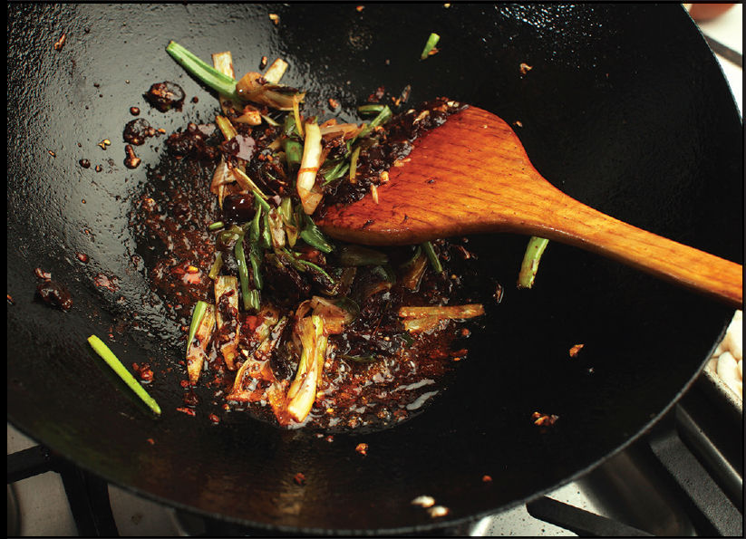
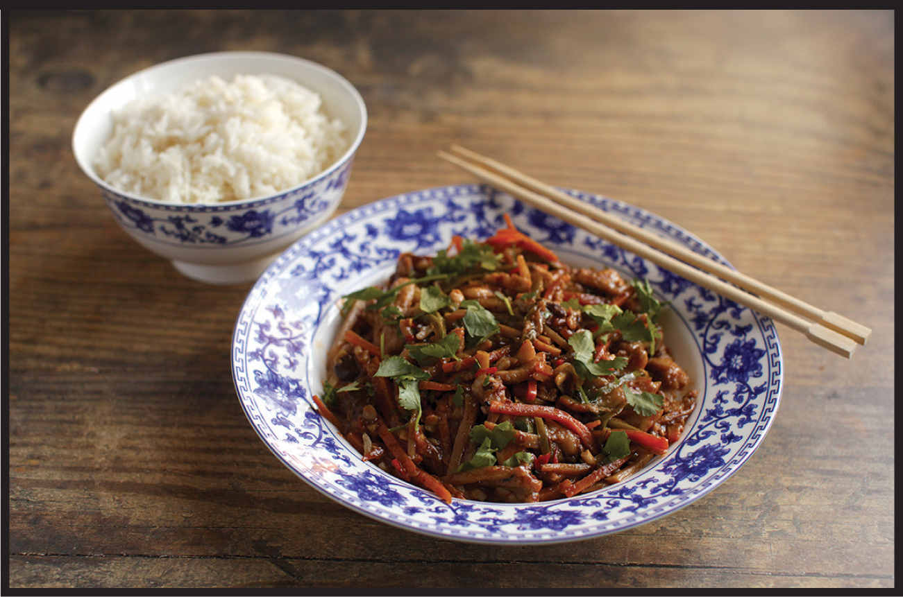

SHREDDED CHICKEN WITH PICKLED CHILES AND CARROTS
|
Yield Serves 4 |
Active Time 30 minutes Total Time 45 minutes |
Adjust the heat level in this dish by adjusting the number of pickled chiles you add. You can also make this dish with fresh chiles by replacing the pickled chile liquid with 1 tablespoon (15 ml) distilled white or rice vinegar along with one to six minced fresh red Thai bird chiles. The recipe as written is quite hot! You can adjust the heat by reducing (or even eliminating) the amount of pickled chiles, replacing them with an equal quantity of white or rice vinegar. You can use an inexpensive balsamic vinegar in place of the Chinkiang. Cowhorn or long green chiles are thin green chiles with moderate spice available at most Asian grocers. You can use Anaheim, poblano, or even jalapeño in their place. For milder heat, use a green bell pepper. Bamboo shoots can be found whole in the refrigerated section of a good Asian supermarket or canned whole or slivered in the international section of most well-stocked Western supermarkets.

Properly bloomed doubanjiang will form a deep crimson-red oil in the wok.

Pico’s Not-So-Bland Chicken (here) is not so bland, but it’s hardly what I’d call a flavor punch to the mouth. This dish, on the other hand, is. It’s based on yuxiang rousi—fish-fragrant pork. It’s so named not because it contains or smells like fish but because it utilizes a combination of hot, sour, and sweet flavors that are typically served with fish in its native Sichuan. In Sichuan you’ll commonly find fish-fragrant pork (and indeed, this recipe works just as well with slivers of pork in place of slivers of chicken breast), as well as fish-fragrant eggplant (see here). To make it, I start by velveting thin strips of chicken breast, then stir-frying them in a quick sauce flavored with pickled chiles, black vinegar, sugar, ginger, and garlic for a hearty, flavor-packed dish that comes together in one wok with minimal effort.
You can use fresh chiles for this, but traditionally the dish is made with pickled chiles, which work much better: the chiles spread their flavor throughout the dish instead of in discrete bursts. Pickled chiles are available at many Chinese grocers, but they aren’t common in a standard supermarket. One solution is to simply pickle your own. It’s easy, and pickled chiles last essentially forever in the refrigerator. Small Thai bird chiles are the best choice among fresh chile varieties available in the West, but any hot red chile will do, such as Fresno, red jalapeño, or red serrano.
This is the first recipe in the book to incorporate doubanjiang, a Sichuan-style condiment made with fermented broad beans and chiles (see here for more information). When adding it to stir-fries, it’s important to bloom it in the hot oil in much the same way a Thai curry paste or Indian curry powder would be bloomed, letting it sizzle and fry until the oil breaks out and takes on a deep red color. This not only adds complexity to the stir-fry but also ensures that the flavor of the paste will coat every morsel of food.
To maximize efficiency, marinate the chicken before you start gathering and preparing the other ingredients.
INGREDIENTS
For the Chicken:
1 pound (450 g) boneless, skinless chicken breast or pork loin, cut into ¼-inch slivers
1 teaspoon (3 g) kosher salt
4 teaspoons (20 ml) Shaoxing wine or dry sherry
½ teaspoon (2 g) baking soda
1 large egg white
2 teaspoons (6 g) cornstarch
For the Sauce:
1 to 6 store-bought or homemade pickled chiles (here), plus 1 tablespoon (15 ml) pickling liquid (see Notes)
2 tablespoons (30 ml) Shaoxing wine or dry sherry
1 tablespoon (12 g) sugar
2 teaspoons (10 ml) light soy sauce or shoyu
1 tablespoon (15 ml) Chinkiang vinegar (see Notes)
For the Cornstarch Slurry:
2 teaspoons (6 g) cornstarch
1 tablespoon (15 ml) water
For the Stir-Fry:
3 tablespoons (45 ml) peanut, rice bran, or other neutral oil
1 medium carrot (about 4 ounces/120 g), peeled and cut into fine matchsticks
1 long green chile such as cowhorn or Anaheim (about 4 ounces/120 g), cut on a sharp bias into long, thin slices (see Notes)
4 ounces (120 g) bamboo shoots, cut into fine matchsticks (see Notes)
2 teaspoons (5 g) minced garlic (about 2 medium cloves)
2 teaspoons (5 g) minced fresh ginger (about ½-inch segment)
2 scallions, cut into 2-inch segments and quartered lengthwise to form fine slivers
2 tablespoons (20 g) Sichuan broad bean chile paste (doubanjiang)
Handful of roughly chopped fresh cilantro leaves, for garnish
DIRECTIONS
1For the Velvet Chicken: Place the chicken in a medium bowl, cover with cold water, and vigorously agitate it. Drain through a fine-mesh strainer set in the sink and press on the chicken with your hands to remove excess water. Return the chicken to the bowl and add the salt, wine, baking soda, egg white, and cornstarch. Stir vigorously with your fingertips or chopsticks for 30 seconds. Let marinate in the fridge for at least 15 minutes and up to 8 hours.
2Meanwhile, Make the Sauce: Combine the pickled chiles, wine, sugar, soy sauce, and vinegar in a small bowl and stir together until homogenous. Set aside. Combine the cornstarch and water in a separate small bowl and stir with a fork until the cornstarch is dissolved.
3To Velvet the Chicken: Bring 1 quart (1 liter) water to a boil in a wok over high heat. Add the chicken, dropping it in a piece at a time to prevent sticking. Cook, stirring occasionally, until the water returns to a brief simmer and the chicken is mostly cooked through, 30 to 60 seconds. Transfer the chicken to a rimmed baking sheet using a spider and spread it into a single layer to dry. Set aside. Dump out the contents of the wok and wipe clean.
4BEFORE YOU STIR-FRY, GET YOUR BOWLS READY:
5For the Stir-Fry: Heat the wok over high heat until lightly smoking. Add 2 tablespoons (30 ml) of the oil and swirl to coat. Add the carrots, chiles, and bamboo shoots and cook, stirring and tossing constantly until the vegetables are tender-crisp, about 1 minute. Transfer to the baking sheet with the velveted chicken.
6Wipe out the wok and return to high heat until lightly smoking. Add the remaining 1 tablespoon (15 ml) oil and swirl to coat. Add the ginger, garlic, and scallions and stir-fry until fragrant, about 10 seconds. Add the broad bean chili paste and cook, stirring constantly, until the oil breaks out and turns deep red, about 30 seconds. Return the chicken and vegetables to the wok and toss to coat thoroughly in the red oil.
7Stir the sauce and add to the wok by pouring it around the edges. Stir the cornstarch slurry and add a splash. Cook, tossing, until the sauce thickens and the chicken is cooked through, about 30 seconds longer. Adjust the sauce consistency with more cornstarch slurry if it is too thin or a splash of water if it is too thick. Transfer to a serving platter and serve immediately with steamed rice.